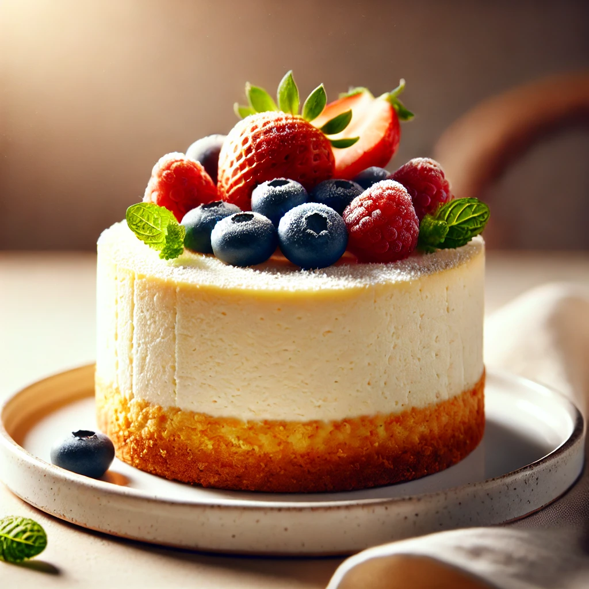

Quark Cheescake

Description
Ingredients for 1 Portion:
- 750g quark (20% fat)
- 250g mascarpone
- 5 eggs
- 100g flour
- 60g neutral protein powder
- 250g butter
- 250g fig-strawberry paste
- ½ packet baking powder
- a bit of lemon juice
For the Fig Paste:
- 150g fresh peeled figs
- 100ml water
- 1 tbsp lemon juice
Preparation of the Fig Paste:
- Wash and quarter the figs, then place them in a pot with 100ml water and lemon juice.
- Simmer over medium heat for 15–20 minutes until the figs are soft, stirring regularly.
- Puree the mixture and let it cool.
Preparation of the Cheesecake:
-
Mix quark, eggs, flour, melted butter, fig paste, baking powder, and lemon juice in a bowl.
-
2. Pour the batter into a greased springform pan (26 cm).
-
3. Bake at 170°C (top/bottom heat) for 1 hour.
-
4. Let it cool in the turned-off oven.